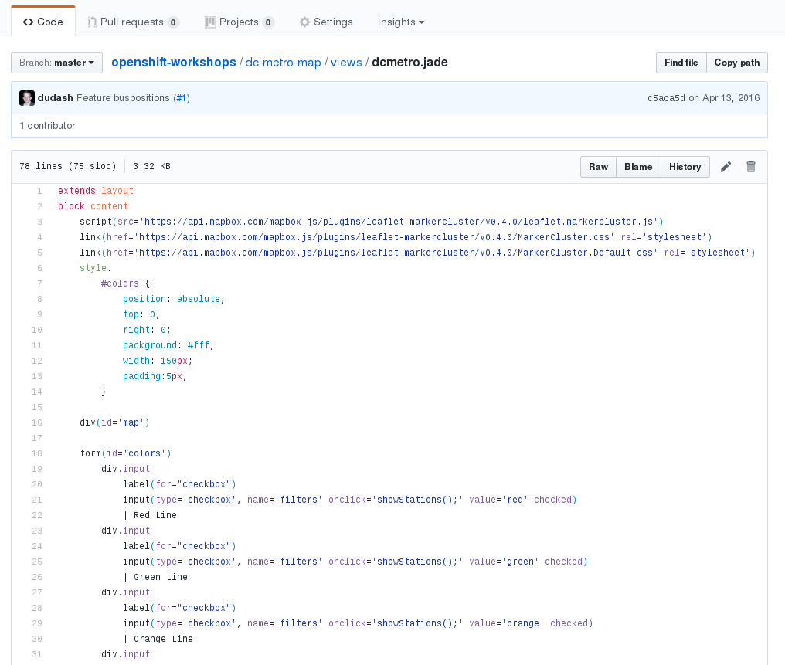
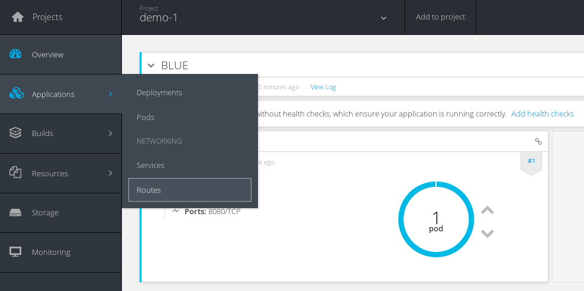
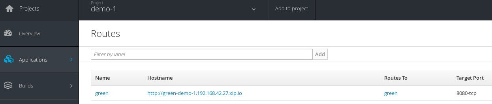
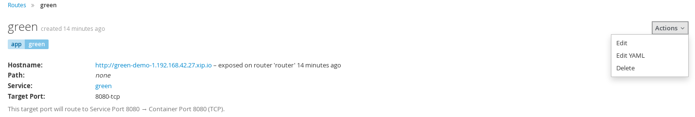
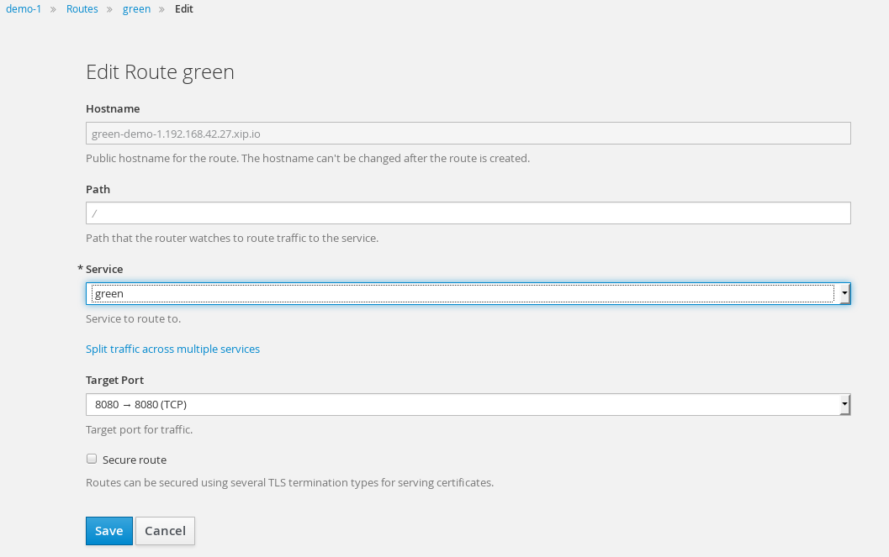

When implementing continuous delivery for your software one very useful technique is called Blue/Green deployments. It addresses the desire to minimize downtime during the release of a new version of an application to production. Essentially, it involves running two production versions of your app side-by-side and then switching the routing from the last stable version to the new version once it is verified. Using OpenShift, this can be very seamless because using containers we can easily and rapidly deploy a duplicate infrastructure to support alternate versions and modify routes as a service. In this lab, we will walk through a simple Blue/Green workflow with an simple web application on OpenShift.
Before we get started with the Blue/Green deployment lab, lets clean up some of the projects from the previous lab.
$ oc delete all -l app=jenkins-ephemeral
$ oc delete all -l app=nodejs-helloworld-sample
To demonstrate Blue/Green deployments, we'll use a simple application that renders a colored box as an example. Using your GitHub account, please fork the following https://github.com/RedHatGov/openshift-workshops project.
You should be comfortable deploying an app at this point, but here are the steps anyway:
Goto the terminal and type these commands:
$ oc new-app --name=green [your-project-repo-url] --context-dir=dc-metro-map
$ oc expose service green
Note that we exposed this application using a route named "green". Wait for the application to become available, then navigate to your application and validate it deployed correctly.
What we'll do next is create a new version of the application called "blue". The quickest way to make a change to the code is directly in the GitHub web interface. In GitHub, edit the dc-metro-map/views/dcmetro.jade file in your repo.

We can change the text labels indicated by name of a color. If you want to change the label for the "Red Line", change line 22 from "Red Line" to "Silver Line". These changes will be easily viewable on the main screen of the application.
Use the same commands to deploy this new version of the app, but this time name the service "blue". No need to expose a new route -- we'll instead switch the "green" route to point to the "blue" service once we've verified it.
Goto the terminal and type these commands:
$ oc new-app --name=blue [your-project-repo-url] --context-dir=dc-metro-map
Wait for the "blue" application to become avialable before proceeding.
Now that we are satisfied with our change we can do the Green/Blue switch. With OpenShift services and routes, this is super simple. Follow the steps below to make the switch:
Goto the terminal and type the following:
$ oc edit route green
This will bring up the Route configuration yaml. Edit the element spec: to: name and change it's value from "green" to "blue".
Navigate to the Routes view from the left-hand menu:

In your Routes overview, click on the "green" route:

In the Route detail page, click on Actions > Edit:

Edit the Route: select the name dropdown and change the value from "green" to "blue":

Pretty easy, right?
If you want to read more about Blue/Green check out this post with a longer description as well as links to additional resources.